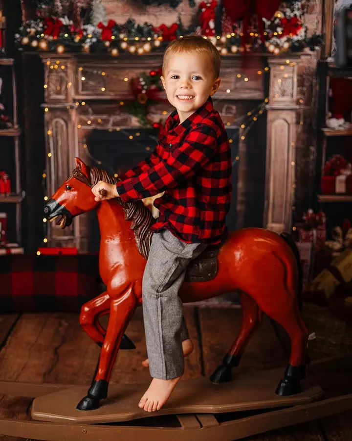
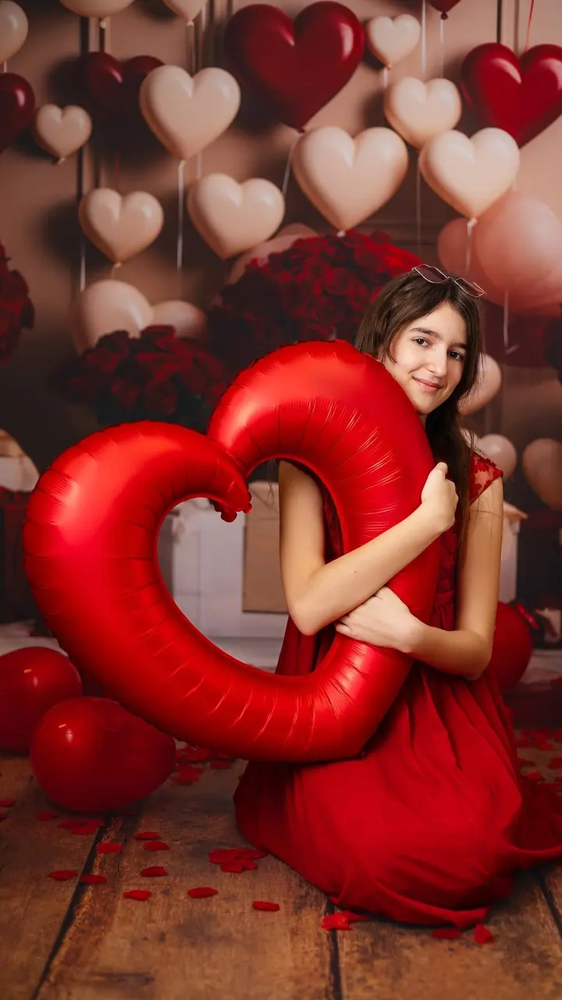
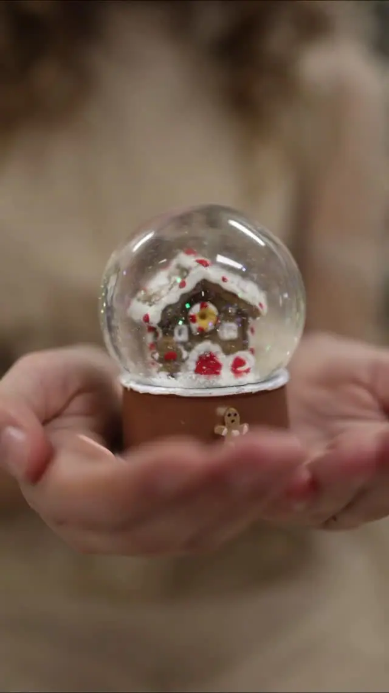
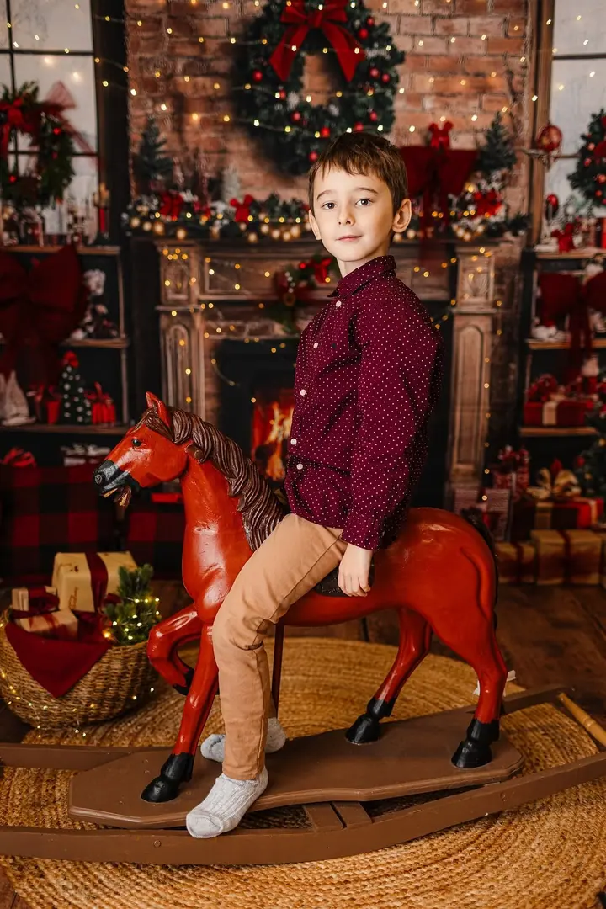
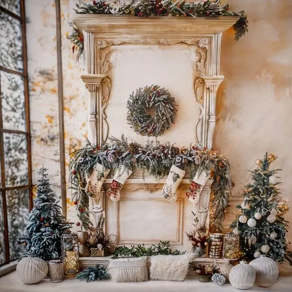

Focení rodin a dětí
Přirozené snímky vaší rodiny a dětí v ateliéru i venku. Nikoho nenutím do úsměvu, děti si u mě prostě hrají.





Jmenuji se Lucie Vaňková a v útulném ateliéru kousek od kolínského náměstí fotím rodiny a děti, miminka i budoucí maminky. Jsem přátelská a veselá fotografka, takže u mě nikdo nemusí říkat „sýýýr“. Děti si při focení hrají a vy si odnesete hezké fotky i dobrý zážitek.
Více o mně„Mám ráda legraci a nikdy mi nechybí dobrá nálada.“
— Lucie Vaňková
Přirozené snímky vaší rodiny a dětí v ateliéru i venku. Nikoho nenutím do úsměvu, děti si u mě prostě hrají.
Ateliér se na podzim promění do tří vánočních scén s krbem, červenou kuchyňkou a zasněženou uličkou. Fotky vám garantuji doma ještě před Štědrým dnem.
Ateliérové focení miminek v prvních dnech a týdnech života. Focení trvá 1 až 3 hodiny, takže je dost času na krmení i přebalování.
Portréty budoucích maminek samostatně nebo společně s partnerem. Těhotenské šaty v různých barvách máte v ateliéru připravené.
Jsem fotografka Lucka, fotím od roku 2015 a jsem máma dvou dětí. Vím, že focení s malými dětmi nebo v pokročilém těhotenství umí být náročné, a proto se u mě nikam nespěchá.
Mám ráda legraci a dobrá nálada mi nechybí. Moji klidnou a trpělivou povahu jen tak něco nerozhodí, takže se nikdy nebudu zlobit, když to s vašimi nejmenšími nepůjde úplně hladce. Nejhezčí záběry vznikají ve chvíli, kdy se všichni cítí uvolněně.
Ateliér najdete v Legerově ulici v prvním patře nad cukrárnou U kraba. Je rozdělený na klasický fotokoutek s barevnými pozadími a lifestyle koutek, který pravidelně obměňuji. Máte tu přebalovací pult, místo na kojení, ohřívačku na lahve i spoustu rekvizit, kožešin a oblečků.
Termín si vyberete sami v online rezervačním systému, nebo mi napište a domluvíme se.
Probereme vaši představu a zeptáte se na cokoli, ať je den focení bez starostí.
V klidné atmosféře ateliéru vás provedu pózováním i přirozenými momenty. Dětem nechám prostor si hrát.
Náhledy vám pošlu do zaheslované galerie, kde si vyberete snímky k úpravě. Hotovou galerii ke stažení máte obvykle do 2 týdnů od výběru.
Ano, a bez příplatku. Sladit termín celé rodiny bývá oříšek, proto fotím o víkendech za stejnou cenu.
To se stává a vůbec nevadí. S dětmi pracuji citlivě a bez spěchu, nechám je hrát si a počkáme, až se uvolní.
Ano. Je tu přebalovací pult, místo na kojení i ohřívačka na kojenecké lahve. Ateliér je v 1. patře bez výtahu, s kočárkem vám ráda pomohu, a parkovat můžete přímo u ateliéru na Obecním dvoře.
Neupravené snímky neposkytuji. Z náhledů si vyberete fotky, které pro vás pečlivě upravím. Tištěné fotky a fotoobrazy si můžete doobjednat.